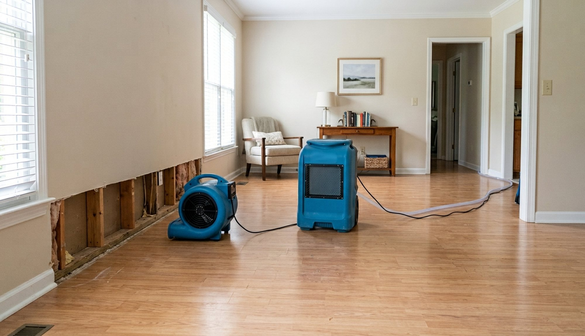
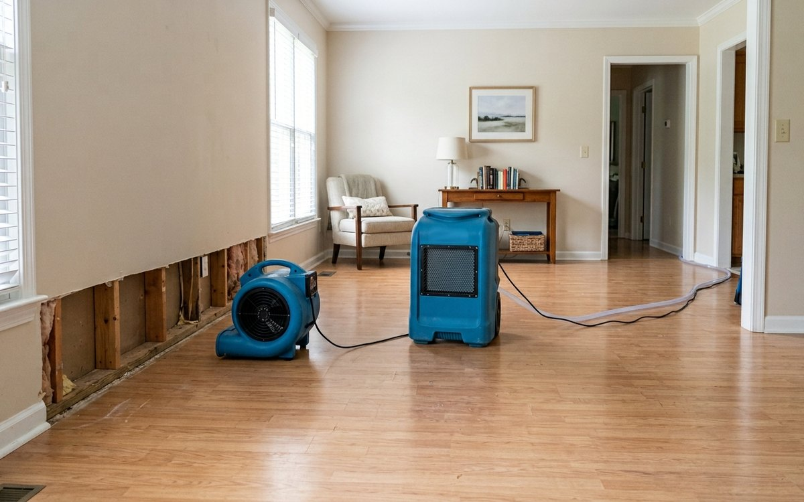
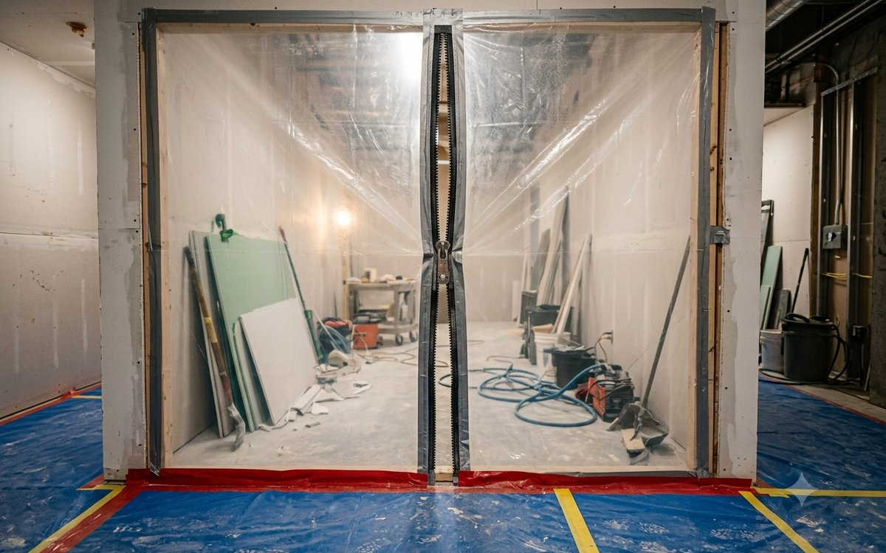
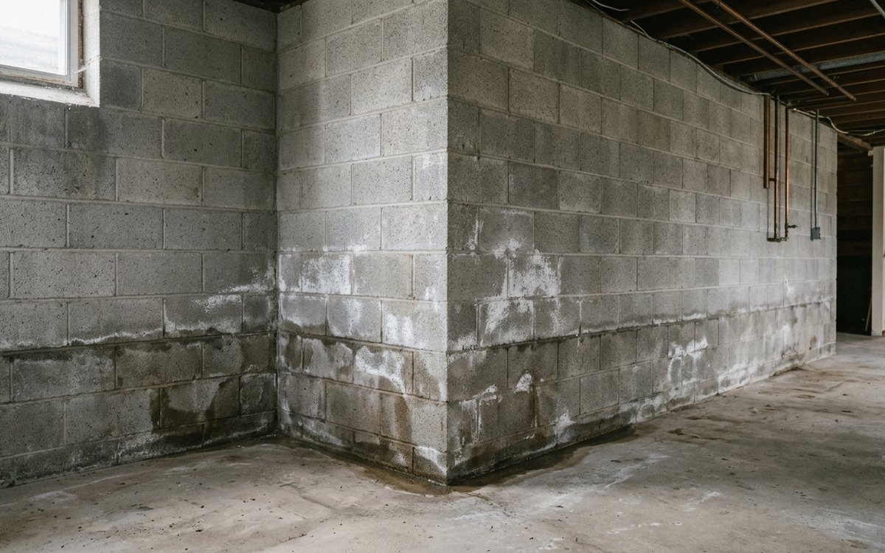
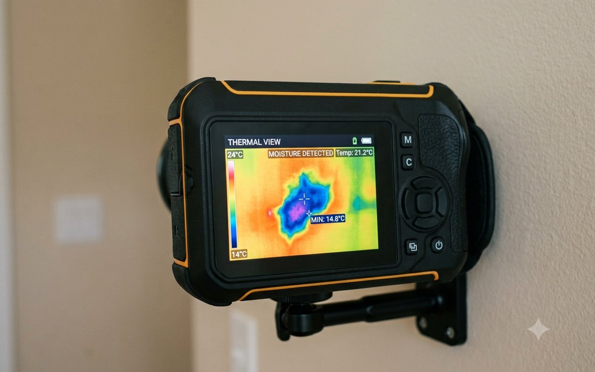
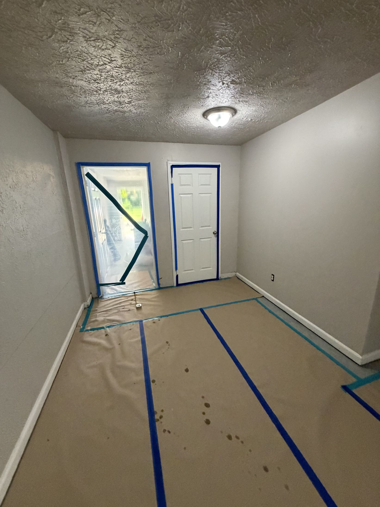
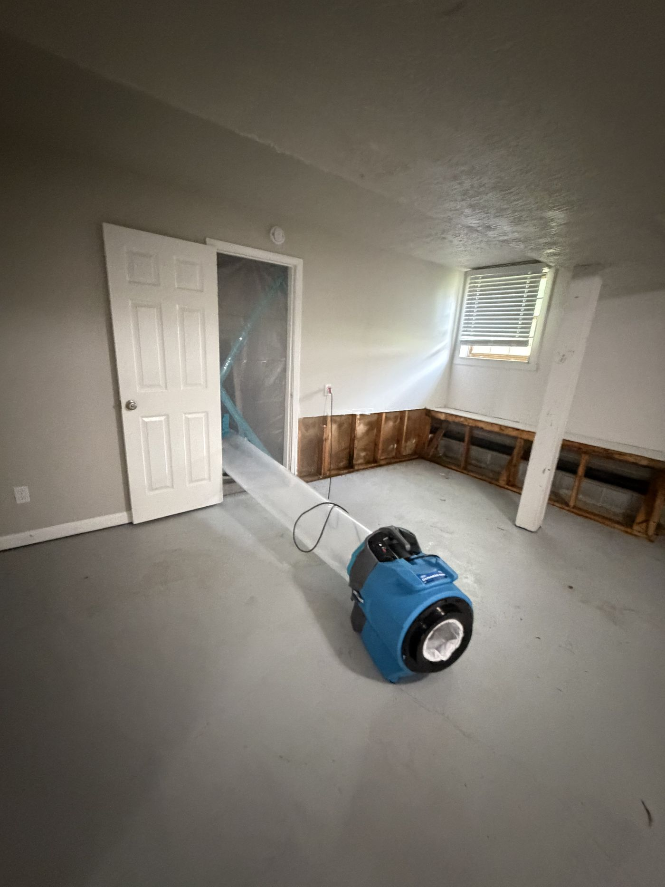
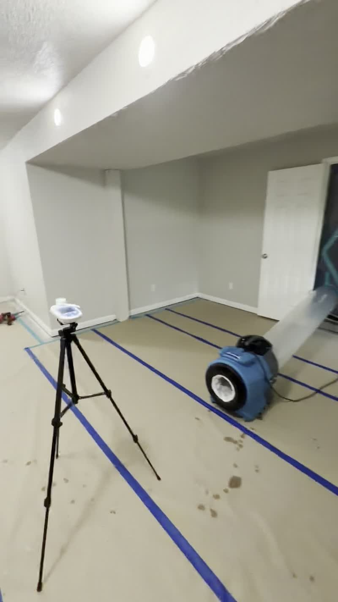

Licensed & InsuredFully covered on every job

Burst pipe, storm flooding, or a leak that got out of hand, we answer 24/7 and get a crew moving fast. Water extraction, structural drying, mold remediation, and waterproofing, with direct insurance billing.
From the first hours of an emergency through drying, mold removal, and stopping the water for good, we handle the whole problem under one roof. Mold testing is available whenever you need to know for certain.

24/7 emergency extraction and structural drying after burst pipes, storm flooding, and leaks. Commercial equipment, daily moisture monitoring, and direct insurance billing.
Learn More →
Containment, HEPA filtration, and physical removal of mold, plus correction of the moisture source that caused it, so it does not come back.
Learn More →
Basement and foundation waterproofing built for Georgia clay. Interior drainage, sump systems, and sealing that keeps water out for good, backed by a warranty.
Learn More →
Independent lab air and surface sampling when you need proof of what is there, compared against an outdoor baseline. Available on its own or before and after remediation.
Learn More →When water gets into your home, you need someone who answers the phone, shows up fast, and knows how to work with your insurance. Here is how we operate.

Call any hour and tell us what happened. Emergency water calls are dispatched immediately, 24 hours a day.
We find the water source, stop it, extract standing water, and document everything for your insurance claim from the first minute on site.
Commercial drying equipment goes in, moisture is logged daily, and any mold is removed. We do not stop until it reads dry.
We put your space back together and, where it makes sense, waterproof so the same thing does not happen again.


We serve homeowners and businesses throughout the metro Atlanta area, with emergency service available 24 hours a day, 7 days a week.
Call to Confirm ServiceBurst pipe, flooded basement, mold, or water that keeps coming back, tell us what is going on and we will get a crew moving. Emergencies are answered day or night.
We'll call you shortly. If this is an emergency, call (470) 760-5249 right now.